A identificação do Sudário de Turim se é
verdadeiro ou falso, não é um problema de
“fé” mas da “ciência”
. A fé é uma virtude interior que 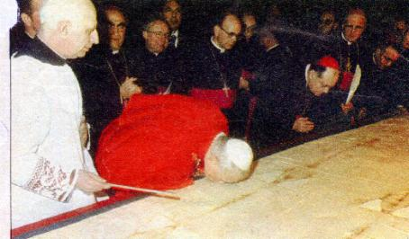
A Igreja nunca se pronunciou oficialmente sobre a autenticidade do Sudário, assim como de dezenas de outras peças que pertencem ao acervo cristão, porque o culto das relíquias é “relativo”, isto é, o culto não deve ser feito ao “objeto”. Por exemplo no caso do Sudário, o culto não deve ser feito ao Lençol de Linho que está em Turim, mas o que ele representa, “a imagem dos sofrimentos de JESUS impressa no tecido com o seu Divino Sangue, oriundo dos terríveis flagelos e de sua abominável morte na Cruz, que redimiu a humanidade de todas as gerações.” Neste sentido, o Cardeal Anastácio Ballestrero ex-Arcebispo de Turim esclareceu numa entrevista à Rádio Vaticano:
“A Igreja nunca julgou a questão da autenticidade do Sudário, embora tem consciência de que se encontra diante de uma imagem tão significativa como expressiva, que recorda a Paixão e Morte do SENHOR. E por essa razão, permite e favorece o seu culto, sem contudo pronunciar-se sobre a sua autenticidade histórica. Tanto é verdade, que os últimos documentos pontifícios relacionados com a Síndone de Turim: a carta do Papa Paulo VI e a carta do Papa João Paulo I, ressaltam que não se trata de uma questão de fé. A fé cristã está sedimentada e em plena atividade em todos os corações que colocam em prática a palavra de DEUS. O Sudário é uma relíquia e como tal, deve ser submetida a uma intensa pesquisa cientifica com a finalidade de ser definida a sua autenticidade, seja através dos fatos históricos ou da tecnologia moderna.”
ATUALIDADE
Na noite do dia 11 para 12 de abril de 1997, um
grande incêndio destruiu a 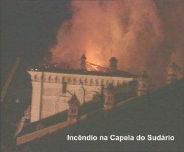
Dois dias após, uma comissão de peritos, composta pelo Cardeal Giovanni Saldarini, examinou o estado da Mortalha. Constatou que não houve nenhuma danificação, e então, o Cardeal confirmou as exposições programadas para 1998 e para o ano 2000. O bombeiro italiano Mario Trematore foi o grande herói do acontecimento, porque foram dele as últimas marteladas que quebrou o vidro à prova de bala e salvou o Santo Sudário de ser destruído pelo fogo. O Lençol de linho que cobriu JESUS morto estava guardado numa caixa de prata dentro de uma redoma na capela Guarini, parte do complexo da Catedral e do Palácio Real de Turim. Ao sair do meio das chamas com a urna de prata nos braços, o bombeiro foi aplaudido e aclamado pelos fiéis. Ele disse depois: "DEUS me deu forças para quebrar o vidro e tirar o Sudário daquele inferno". Para o Cardeal de Turim, Dom Giovanni Saldarini, responsável pela guarda do manto que pertence ao Vaticano, "aconteceu um verdadeiro milagre". Ao saber da proeza, o papa João Paulo II que visitava a Bósnia, anunciou que ia fazer uma homenagem especial ao bombeiro e dar pessoalmente a sua bênção a Trematore.
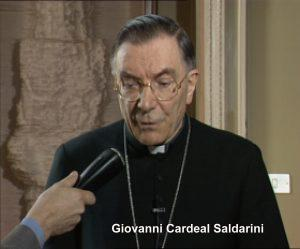
De 18 de abril a 14 de junho de 1998 o Sudário foi exposto em Turim, na celebração do quinquagésimo aniversário da Consagração da Catedral de São João Batista e da comemoração do primeiro centenário da exposição pública do Lençol Mortuário, realizada pela primeira vez em 1898, quando foi feita a primeira fotografia que contribuiu de forma determinante para o encaminhamento das pesquisas científicas sobre a Relíquia.
Em 2000, aconteceu uma Exposição Especial entre os dias 29 de abril e 11 de junho, em honra e homenagem ao Jubileu dos 2000 anos do nascimento de JESUS. Sobre o sentido da exposição o Cardeal Saldarini, curador do Sudário, disse:
“Realizam-se as exposições
de acordo com o interesse religioso e histórico de um 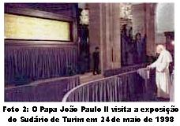
Pelo fato de ser uma relíquia preciosa e de valor
inestimável para a cristandade, não é exposta com frequência, é conservada em plena
segurança e só em ocasiões 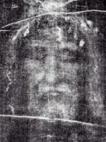
Por outro lado, sendo o Sudário um patrimônio cristão muito especial para todos que acreditam na sua autenticidade, despertou em todos os tempos uma profunda e carinhosa devoção a Face de CRISTO, o que motivou a organização de Congressos e Simpósios ao longo dos anos, para um melhor conhecimento e aprofundamento dos estudos feitos nas impressões decalcadas no tecido de linho, sobretudo para uma observação mais minuciosa dos impressionantes flagelos e dos maus tratos suportados pelo SENHOR. Desse modo, a devoção a Divina Face de JESUS, é uma digna resposta de amor, que a humanidade oferece ao CRIADOR, primordialmente lembrando a citação do Novo Testamento, "é na Face do SENHOR que resplandece com todo esplendor a glória do PAI ETERNO". (2 Cor 4, 6)
CONTROVÉRSIA
No mundo em que vivemos, apesar de todas as
evidências de um acontecimento, 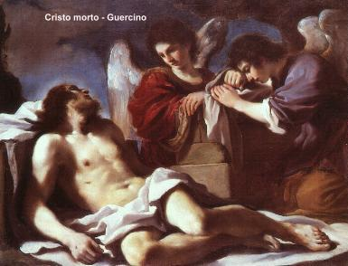
Assim acontece com o Sudário de Turim: muitos acreditam nas provas e nos testemunhos e muitos rejeitam, dizendo tratar-se de uma pintura do século XII.
Todavia, devemos abrir espaço em nossa mente para um raciocínio objetivo e direto, porque também só assim alcançaremos a luz radiosa que nos propiciará a certeza sobre uma determinada realidade.
O Sudário já existia quando foi inventada a maquina fotográfica. Então se ele é falso, obra de um artista medieval, perguntamos: como um artista naquela época, por mais hábil e competente que fosse, podia pintar uma imagem negativa sobre um linho branco, se na Idade Média não existia qualquer conhecimento sobre anatomia e fotografia? E percebam, as imagens como estão no Sudário constituem negativos tão perfeitos, que com o desenvolvimento da ciência e as novas técnicas de computação, temos dúvidas se existiria hoje, alguém com invulgar habilidade e profundo conhecimento anatômico, capaz de reproduzir aquela imagem sobre um tecido de linho branco com tamanha precisão? Acreditamos que é impossível.
Por outro lado, em nossa apreciação sobre a autenticidade do Sudário, devemos ter presente todas as pesquisas criteriosamente realizadas, como: os ensaios do especialista suíço Dr. Max Frei sobre os pólens que estão na Mortalha; a conclusão do botânico israelense Avinoam Danin sobre a origem do tecido; a descoberta do biofísico americano Dr. John Heller informando que o Sangue do Sudário é humano do tipo "AB" universal; o testemunho técnico de John Tyrer pesquisador da industria têxtil na Inglaterra a favor da origem oriental do tecido; os estudos e testes feitos pelo médico e cirurgião francês Dr. Pierre Barbet; da palavra autorizada do químico Dr. Willard Libby prêmio Nobel de 1960 informando sobre a maneira inadequada de como foi realizado o teste com o Carbono 14; as experiências do professor e físico americano Dr. John Jackson e do cientista russo Dr. Dmitri Kouznetsov, que reproduziram em laboratório o efeito do incêndio de Chambèry sobre a Mortalha, provando que aumentou consideravelmente a quantidade de Carbono 14 desprendido durante o ensaio, apresesentando desse modo, uma datação enganosa; e muitas outras pesquisas sérias que aqui não foram evidenciadas, nos transmitem a convicção clara, de que o Sudário de Turim é uma relíquia muito especial e preciosa, não um tecido falso e vulgar que quer iludir a humanidade.
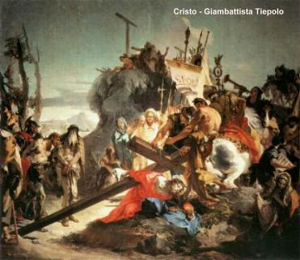
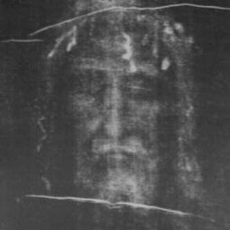
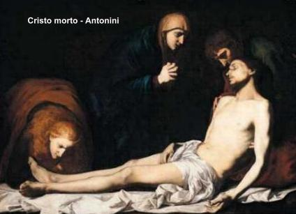
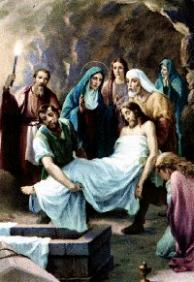
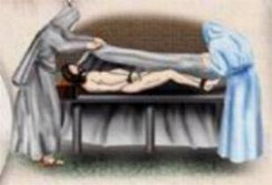
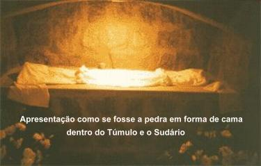
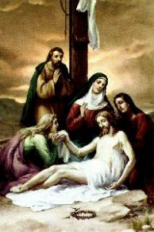
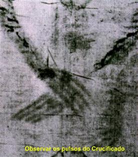
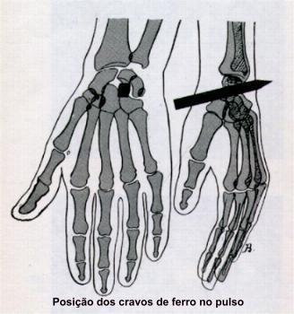